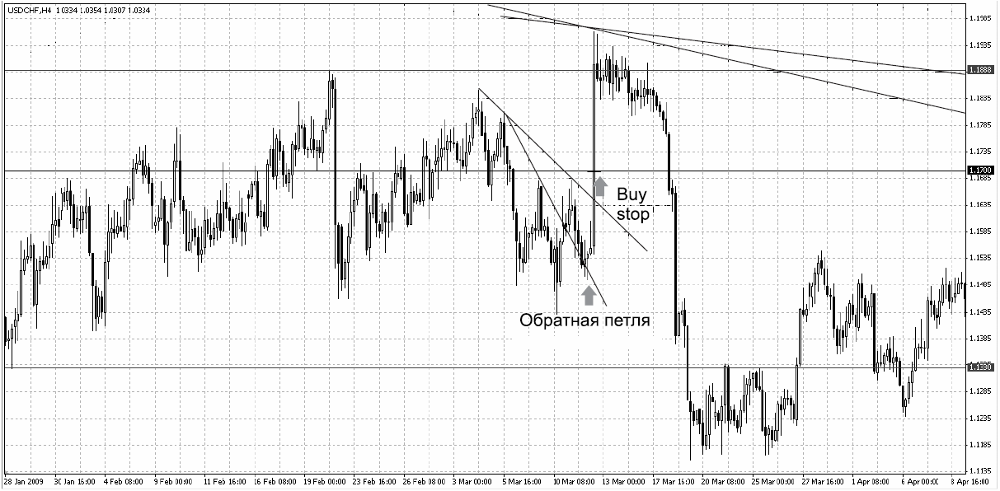
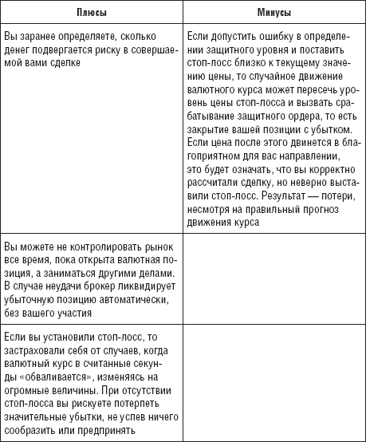
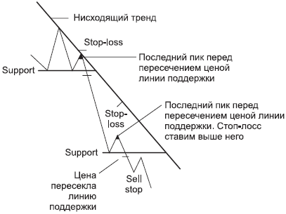
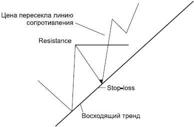
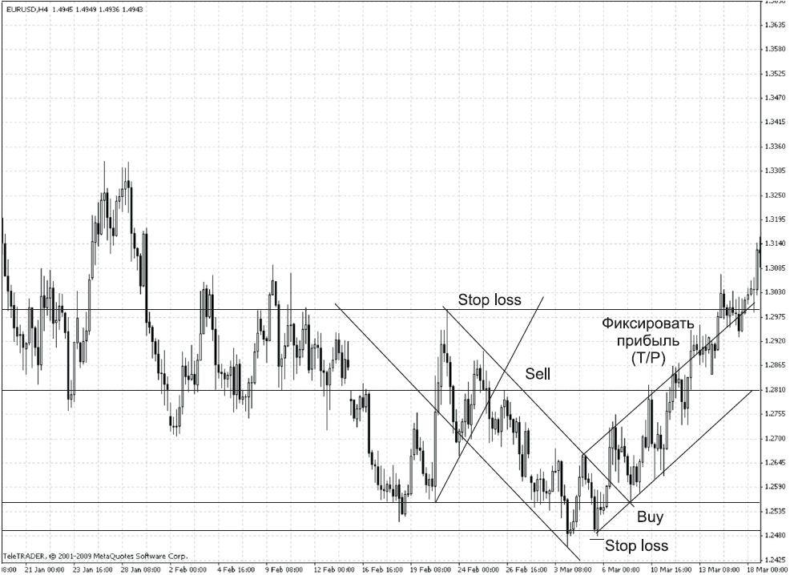

Форекс и просто лось

Весна, зеленеет травка, почки на деревьях набухают, солнышко пригревает. На полянке в лесу пасется лось. Вдруг на полянку выскакивает молодая лосиха. Увидев ее, лось теряет голову и, надеясь на знакомство, подбегает к лосихе. Но лосиха, кокетничая, отпрыгивает и пускается наутек. Лось за ней. Вот она прыгает через ручеек – и лось через ручеек, лосиха через кустик – и лось через кустик, лосиха через холмик – и лось через холмик... Так они бегали полдня. Лосиха прыгнула через бревно, а у уставшего лося нога подвернулась, и, прыгнув через бревно, он зацепился за него и рухнул на землю со всего маху. Лосиха остановилась, оглянулась и, видя, что лось не встает и не продолжает игру, начала к нему приближаться. Затем, игриво сверкая глазами, решила представиться сама: «Лосиха, самка! А вы?» Лось печально: «Лось», затем, опустив глаза вниз: «Теперь – просто лось».
Форекс – не только гимнастика для ума, он расширяет наш экономический кругозор, дисциплинирует нас и дает очень достойный финансовый эквивалент нашим мозговым затратам. Поэтому риски – это та тема, которую необходимо рассмотреть в первую очередь. Ведь предупрежден – значит, вооружен! Вспомните про аварийное освещение, о котором мы с вами говорили в разделе 2, посвященном постулатам Доу.
Итак, стоп-лосс.
? КРАТКАЯ СПРАВКА
Стоп-лосс (stop-loss order – от английского «приказ остановить убытки»), он же «ограничитель потерь», он же «стоп-ордер», он же «стопарь», он же просто «лось».
Вы слышали выражение «Словить лося...»? Нет, это не заядлые охотники обсуждают свои трофеи. Это трейдеры обсуждают свои сделки. Чаще всего именно стоп-лосс вызывает горячие споры у трейдеров. Этот ордер не оставляет равнодушным никого. Одни заявляют, что когда стоп-ордер срабатывает, надо радоваться, так как он ограничил их потери, которые были бы гораздо большими, если бы стопа не было. Другие, в досаде «поймав лося», утверждают, что если бы они не ставили этот ордер на сделку, то, соответственно, заработали бы, а так цена «сходила за стопом» и полетела в рассчитанном направлении. Так нужен ли стоп-лосс? Или можно обойтись без него? Вообще почему возник вопрос о необходимости выставлять или не выставлять этот ордер?
Давайте разберемся по порядку.
Итак, вы – трейдер. Вы верно рассчитали сделку и определили момент входа в рынок, выставили защитный стоп-ордер, ордер на фиксацию прибыли и уже в предвкушении дохода начинаете строить планы на будущие сделки и будущую прибыль, но именно в этот момент происходит некое не предвиденное вами событие, и цена резко начинает движение, противоположенное тому, на которое вы рассчитывали. И вот на ваших глазах цена доходит до вашего «стопа» (на котором вы, прямо скажем, сэкономили), закрывает сделку и тут же начинает движение в рассчитанном вами направлении, пунктов на 400-500, но уже без вас. Можете долго-долго рассказывать всем друзьям, знакомым и малознакомым о том, как вы верно рассчитали это движение, и о том, где могли бы зафиксировать прибыль и заработать 4000-5000, если бы «не словили лося». Можете даже спеть песню Винни Пуха: «Мед – очень странный предмет, если он есть, то его сразу нет», но в данный момент это уже история сделки, и история эта, будем откровенны, не в вашу пользу. К сожалению. А история – это мы знаем из теории Доу – имеет свойство повторяться. «История всегда повторяется...» – помните? И если она повторится еще пару раз и с таким же результатом, то что сделаете вы в этом случае? Правильно! Вы станете ярым противником стопов и скажете себе и окружающим: «Стопы не нужны! Они только мешают работать. Больше я их не ставлю...». И, может быть, у вас получится даже немного заработать... Но именно в тот момент, когда вы переходите из партии «любителей стоп-лоссов» в партию «противников стопов», уверившись, что стоп-лосс – это «ловушка для новичков», и перестаете им пользоваться из принципиальных соображений, вы попадаете в группу риска и практически начинаете движение по лезвию бритвы. Одно неверное движение, и...
Помните 12 марта 2009 года? Швейцарский банк провел интервенцию. Это непрогнозируемое событие... Подобные события, конечно, редки, но падение франка привело к тому, что доллар резко вырос. И тот, кто не использовал «ограничитель потерь», получил убытки, а тот, кто выставил этот ордер, пусть и зафиксировал небольшие потери, сумел компенсировать их, выставив ордер на пробитие линии сопротивления от 1,1700 и получив прибыль в 3000 долларов (рис. 5.1). И обратите внимание на то, что хотя это и было непрогнозируемое событие, но цена заранее разрисовала разворот в виде так называемой «обратной петли». И это лишний раз доказывает, что цена в своем движении учитывает все прогнозируемые и непрогнозируемые события и часто заранее подает нам сигнал о том, что необходимо делать.
Так может, не стоит рассматривать стоп-лосс в качестве врага депозита, а воспринимать его как реального друга, помогающего сохранить ваш депозит, а неоправданные, на ваш взгляд, потери рассмотреть в другом контексте? Помните, как в рекламе: «Вы просто не умеете их готовить...». Я не собираюсь убеждать вас в очевидном. Все равно каждый из вас сделает то, что сочтет нужным. Но есть четкие правила управления финансовыми рисками, которые позволяют заранее определить моменты входа и выхода из сделки. Суть стоп-ордера состоит в том, что при открытии валютной позиции (совершении покупки или продажи валюты) вы заранее устанавливаете величину возможных потерь. Такие потери могут возникнуть, если вы приняли неправильное решение и валютный курс пошел не туда, куда вам хотелось. Стоп-ордер устанавливается на задаваемом вами уровне цены.
Если цена превышает этот уровень, то ваша валютная позиция автоматически ликвидируется брокером. Таким образом, вы ограничите убытки определенной суммой. Перед входом в сделку я всегда рассматриваю все плюсы и минусы. Давайте и мы с вами рассмотрим все плюсы и минусы установки стоп-лосса (с точки зрения трейдера).

РИС. 5.1.Интервенция швейцарского банка

Как же выставлять стоп-лосс?
При нисходящем тренде стоп-лосс ставится выше последнего пика перед пересечением ценой линии поддержки на графике цены. Я ставлю ограничитель потерь выше на 5 пунктов от пика плюс спред (рис. 5.2).

РИС. 5.2.Стоп-лосс при нисходящем тренде
Стоп-лосс при восходящем движении ставится ниже последнего пика перед пересечением ценой линии сопротивления на графике цены. Его я также ставлю ниже последнего пика на 5 пунктов плюс спред (рис. 5.3).
Стоп-лосс устанавливается сразу после открытия позиции.
Во время прибыльно открытой позиции старайтесь располагать стоп-лосс как можно ближе к безубыточному уровню. Речь идет о том, что когда у вас уже появилась прибыль, вы можете переустановить ваш стоп-ордер на уровень цены открытия позиции. Если курс снова пойдет обратно, то при исполнении ордера вы не понесете убытков.

РИС. 5.3.Стоп-лосс при восходящем тренде
Стоп-лосс необходимо использовать при расчете рентабельности сделки.
В последнем случае прежде всего нужно рассчитать соотношения предполагаемых потерь в случае, если цена пойдет против вас (стоп-лосс), и прогнозируемой прибыли (тейк-профит, take profit). Как выставлять стоп-лосс, мы с вами уже рассмотрели, а тейк-профит определяется при получении сигнала, прямо противоположного тому, который был получен при открытии сделки. То есть если мы делали покупку от линии поддержки, то определяем ближайшее сопротивление, от которого могут начаться продажи, и именно в этой области выставляем тейк-профит. И только соотношение стоп-лосс/тейк-профит должно стать для вас определяющим при принятии решения о входе в сделку. Если риски составляют 100 пунктов, а ближайшая линия сопротивления находится на расстоянии 70 пунктов, подумайте, стоит ли вставать в сделку и рисковать потерей 1000 долларов, рассчитывая заработать всего 700. Соотношение риски/ прибыль должно составлять 3:1, может быть, 2:1. Все остальное – рискованные операции. И вам необходимо отдавать себе в этом отчет.
И еще, на мой взгляд, очень важный момент. Нельзя позволять себе риски, превышающие 10 % от вашего депозита. В противном случае вы рискуете своим депозитом. Рассмотрим простой пример.
Пусть ваш депозит – 5000 долларов. Это значит, ваш рисковый капитал составляет не более 50 пунктов (10 % от 5000 – 50 пунктов), а вы просчитали, что ваши риски в конкретной сделке составят 100 пунктов. По всем правилам установки стоп-лосса меньше никак не получается. Однако вы можете себе позволить не более 50 пунктов, в противном случае сделка будет считаться рискованной и может привести к большим потерям, чем вы себе можете позволить. Вывод один: не вставать в эту сделку, а рассматривать другие варианты на других валютных парах там, где ваш стоп-лосс не превысит 50 пунктов. Меня часто спрашивают мои ученики: «А на какой валюте лучше выставляться?» И я неизменно отвечаю – на той, где точка входа будет красивее (по классике – со всеми корректными разворотами), и обязательно с минимальным, приемлемым для вашего депозита стоп-лоссом. Ведь сопряженные валютные пары, как правило, «отправляются в дорогу» практически одновременно, но с разной скоростью (понятие волатильности мы с вами разберем в разделе 6). И часто когда на одной валюте цена уже пришла к своей цели, на других она только-только приближается к ней. Но ведь уходить-то они будут одновременно! Хотя и с разной скоростью. Вот там, где цена красиво приглашает вас, там и выставляйте позицию. И непременно со стоп-лоссом. Не поддавайтесь искушению открыть сделку с превышением рисков. Хлопотно это. И просто финансово невыгодно.
? «СЭКОНОМИЛА...»
(из цикла «Невыдуманные истории»)
Как-то подходит ко мне моя ученица Лена: «Ирин, подскажи сделочку». – «Да не вопрос», – говорю. И рассказываю ей о выставленном у себя отложенном ордере по паре доллар-франк. Со стопом и профитом. В принципе, по всем законам эта сделка укладывалась в необходимые параметры управления финансовыми рисками и для ее счета. На следующий день сделка открылась. Конечно, поштормило немного... Но тем не менее закрылась по профиту. Довольная итогами торгов, прихожу в дилинг, встречаю Лену, улыбаюсь: «Ну что, – говорю, – можно поздравить с профитом?» – «Да нет, – говорит, – у меня стоп-лосс сработал». Я опешила... «Как это стоп сработал? У меня же не сработал, стоп-то одинаковый был, что у тебя, что у меня... Почему у тебя сработал?» – «Да я, – говорит, – сэкономила. Поменьше поставила риски». И наказала себя...
Вывод – не экономьте на стопах!!!
Рассмотрим следующий пример (рис. 5.4).

РИС. 5.4.Примеры расстановки стоп-лоссов
Итак, мы приняли решение о продаже пары евродоллар.
1. Определяем ближайший уровень сопротивления, от которого мы выставим продажу.
2. Определяем, на каком уровне находился ближайший предыдущий пик при нисходящем движении, и выше этого пика планируем выставить стоп-лосс.
3. Определяем ближайший уровень поддержки, от которого могут начаться покупки, и чуть выше от этого уровня ставим тейк-профит.
4. Рассчитываем рентабельность сделки. Наша расчетная прибыль составит 250 пунктов, а риски – 100 пунктов. Соотношение 2:1 выполняется.
5. Выставляем сделку. Для этого:
1) выставляем ордер на продажу по цене 1,2810 от линии сопротивления;
2) выставляем защитный стоп-ордер по цене 1,2900 (и вверх 5 пунктов плюс спред).
Поскольку движение нисходящее, то всякий последующий пик и последующий спад ниже, чем предыдущий.
3) выставляем ордер на фиксацию прибыли по цене 1,2553.
Рассмотрим эту ситуацию далее. Пусть цена пробила линию сопротивления и тренд сменился, став восходящим. В результате мы встаем на покупку пары евро-доллар и рассуждаем аналогичным образом.
1. Определяем ближайший уровень поддержки, от которого мы выставим покупку.
2. Определяем, на каком уровне находился предыдущий спад при восходящем движении, и ниже этого спада планируем выставить стоп-лосс.
3. Определяем ближайший уровень сопротивления, от которого могут пойти продажи, и чуть ниже этого уровня выставляем ордер на фиксацию прибыли.
4. Рассчитываем рентабельность сделки. Наша расчетная прибыль составит 250 пунктов, а риски – 70 пунктов. То есть соотношение 3:1 выполняется.
5. Выставляем сделку. Для этого:
1) выставляем ордер на отскок от линии поддержки по цене 1,2553;
2) выставляем защитный ордер по цене 1,2482 (и вниз еще 5 пунктов плюс спред).
Поскольку тренд восходящий, то всякий последующий пик и последующий спад выше, чем предыдущий.
3) выставляем ордер на фиксацию прибыли по цене 1,2811.
Как видите, ничего сложного нет.
Человек, идущий к своей цели, имеет определенный багаж знаний и жизненного опыта – именно этот опыт и дает человеку уверенность в том, что он достигнет своей цели. Так и цена стремится к тейк-профиту столь уверенно, когда она защищена своим стоп-лоссом.
Удачи, вам, трейдеры! Больше профитов и меньше «лосей»!
? ВОВАН И МАСШТАБЫ
(из цикла «Невыдуманные истории»)
Обсуждаем фунт-иену: где ее ждать. Вован убежденно: «Можно прихватить здесь. Ну протащит она тебя. Ну сотку, ну две, в крайнем случае – штуку. Все равно даст выйти...» Все в изумлении смотрят на него. «Сколько-сколько протащит? Это ты в пунктах?» – «Конечно! А как же вы хотели деньги зарабатывать?»
Теперь, когда встаем в сделки, каждый раз смеемся: ну протащит цена тебя сотку-другую. В крайнем случае – штуку... Все равно даст выйти. Позитив, однако.
Сергей вывел дополнение к теории Доу: «Рынок бесконечен. А цена всегда стремится к стоп-лоссу». После закрытия сделки по стоп-лоссу Сергей спел частушку: «Тяжела и неказиста жизнь простого трейдериста».